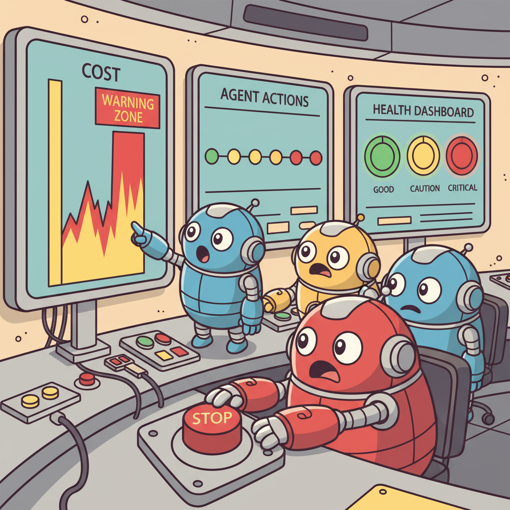
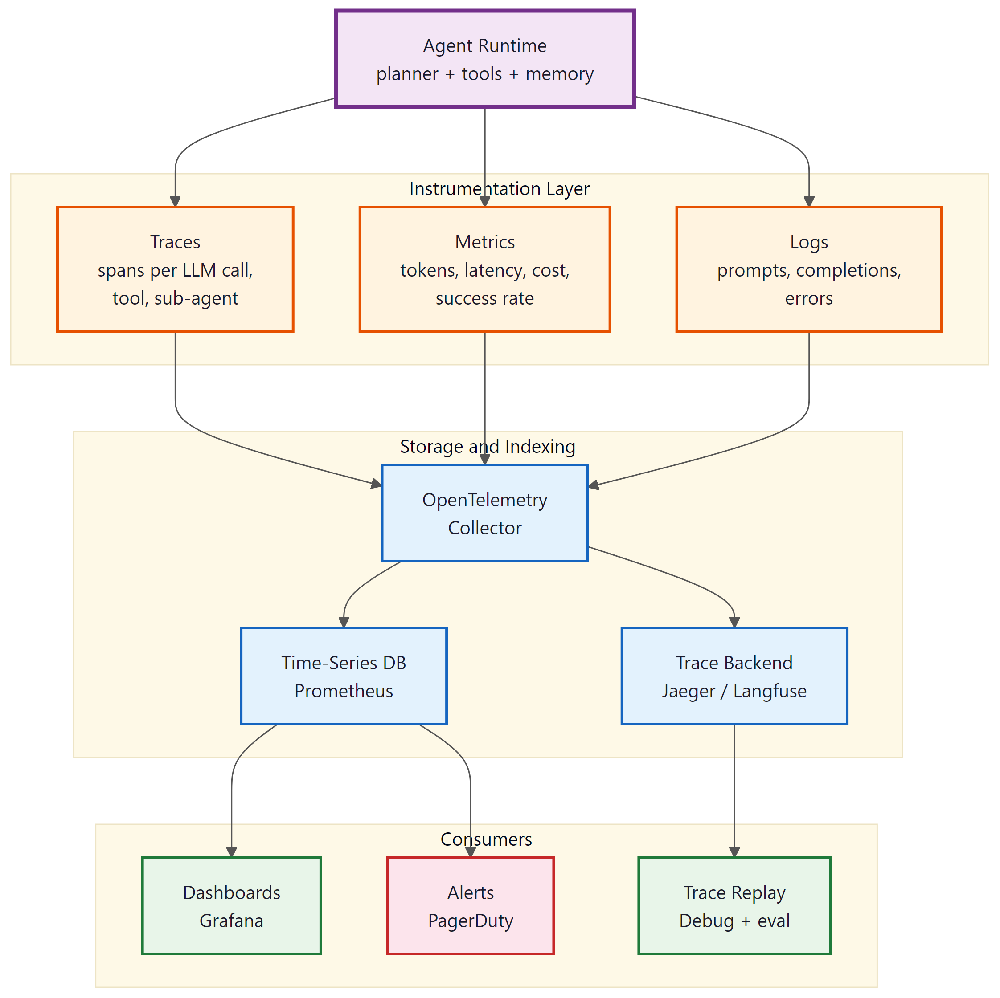

"If you cannot see what your agent is doing, you cannot afford what your agent is spending."
Sentinel, Cost-Conscious AI Agent
An agent you cannot observe is an agent you cannot trust, debug, or budget for. Unlike traditional web requests that follow a predictable path, an agent loop can take any number of steps, call any combination of tools, and run for seconds or hours. Without proper observability, debugging agent failures becomes a guessing game, and runaway costs go undetected until the invoice arrives. This section covers the three pillars of agent observability (traces, metrics, logs), cost control mechanisms (per-run budgets, circuit breakers, model tiering), and practical integration with tools like Langfuse, LangSmith, and Arize Phoenix. The general observability patterns from Module 27 (Observability sections) provide the foundation; this section extends them for agentic workloads.
Prerequisites
This section builds on all previous chapters in Part VI, especially tool use (Chapter 21) and multi-Section 20.1 (Chapter 22).

24.3.1 Observability for Agentic Systems
Observing what an agent is doing is fundamentally harder than observing a traditional web application. A web request follows a predictable path: receive request, process, respond. An agent loop can take any number of steps, call any combination of tools, and run for seconds or hours. Without proper observability, debugging agent failures becomes a guessing game. "The agent gave a wrong answer" is not actionable; "the agent called the search tool with the wrong query at step 3, retrieved irrelevant documents, and based its answer on those documents" is actionable.
Modern agent observability builds on OpenTelemetry's distributed tracing model. Each agent run is a trace. Each LLM call, tool invocation, and decision point is a span within that trace. Spans capture timing, input/output, token usage, and metadata. This trace structure enables you to see exactly what happened at each step, how long each step took, and what data flowed between steps. Tools like Langfuse, LangSmith, and Arize Phoenix provide pre-built integrations for popular agent frameworks.
The three pillars of agent observability are traces (the complete execution path of an agent run), metrics (aggregated measurements like success rate, average latency, cost per task), and logs (detailed event records for debugging). Traces answer "what happened in this specific run?" Metrics answer "how is the system performing overall?" Logs provide the raw detail needed for root cause analysis when traces point to a problem area.

The single most valuable observability metric for agents is cost per successful task. This combines success rate, token usage, number of tool calls, and retry count into a single number that tracks the economic efficiency of the agent. An agent that costs $0.50 per successful task is more operationally viable than one that costs $5.00, even if the expensive one has a slightly higher success rate. Track this metric over time and across agent versions to ensure improvements in capability do not come with unsustainable cost increases.
Langfuse Integration
This snippet instruments an agent pipeline with Langfuse for tracing, logging, and observability.
from langfuse import Langfuse
from langfuse.decorators import observe
langfuse = Langfuse()
@observe(name="agent_run")
def run_agent(task: str) -> str:
"""Complete agent run with automatic tracing."""
@observe(name="plan")
def plan_step(task):
return llm.invoke(f"Create a plan for: {task}")
@observe(name="execute_step")
def execute_step(step, context):
return agent_executor.invoke(step, context=context)
@observe(name="synthesize")
def synthesize(results):
return llm.invoke(f"Synthesize these results: {results}")
plan = plan_step(task)
results = []
for step in plan.steps:
result = execute_step(step, results)
results.append(result)
return synthesize(results)
# Each call creates spans in the Langfuse trace
# Visible in the Langfuse dashboard with timing, tokens, costs
result = run_agent("Analyze Q3 sales trends")Agent observability requires a fundamentally different mental model from traditional application monitoring. Web applications follow predictable request/response patterns; you monitor latency percentiles and error rates. Agents follow emergent, non-deterministic paths; you must monitor reasoning quality, tool call efficiency, and task outcome correctness. The three questions to answer for every agent run are: (1) Did the agent reach the right conclusion? (2) Did it take a reasonable path to get there? (3) How much did it cost? If you can answer these three questions from your observability data, you have enough instrumentation. If you cannot, add tracing until you can. The evaluation techniques from Chapter 27 provide frameworks for measuring agent quality systematically.
24.3.2 Cost Control and Budget Enforcement
Agent systems can generate unpredictable costs because the number of LLM calls per task varies. A task that should take 3 tool calls might enter a retry loop and make 30 calls before the maximum attempt limit is reached. Without budget enforcement, a single runaway agent can consume a significant portion of the monthly API budget. Implementing cost controls at multiple levels prevents this: per-task budgets, per-user budgets, per-hour rate limits, and system-wide spending caps.
The simplest and most effective cost control is a per-task token budget. Before the agent starts, calculate the expected token cost based on the task type and set a hard limit at 3 to 5 times that expectation. If the agent exceeds the budget, it must produce the best answer it can with the remaining tokens or terminate gracefully with a partial result. This prevents runaway costs while allowing headroom for tasks that genuinely need more processing.
class BudgetEnforcer:
def __init__(self, max_tokens: int, max_cost_usd: float):
self.max_tokens = max_tokens
self.max_cost_usd = max_cost_usd
self.used_tokens = 0
self.used_cost = 0.0
def check_budget(self, estimated_tokens: int) -> bool:
"""Check if the next LLM call is within budget."""
if self.used_tokens + estimated_tokens > self.max_tokens:
return False
return self.used_cost < self.max_cost_usd
def record_usage(self, input_tokens: int, output_tokens: int, model: str):
"""Record token usage and update cost tracking."""
self.used_tokens += input_tokens + output_tokens
cost = calculate_cost(input_tokens, output_tokens, model)
self.used_cost += cost
def remaining_budget(self) -> dict:
return {
"tokens_remaining": self.max_tokens - self.used_tokens,
"cost_remaining": self.max_cost_usd - self.used_cost,
"utilization": self.used_cost / self.max_cost_usd,
}
24.3.3 Alerting and Anomaly Detection
Proactive alerting catches agent issues before they impact users. Set up alerts for: task failure rate exceeding a threshold (e.g., >10% failures in a 5-minute window), average latency exceeding SLA targets, cost per task spiking above baseline, tool call error rates increasing (may indicate an upstream API issue), and agent loop count exceeding expected bounds (the agent is stuck in a retry loop).
Anomaly detection goes beyond static thresholds by learning the normal behavior patterns of your agent system. A model-based anomaly detector can flag when the distribution of tool calls changes (the agent is suddenly calling a tool it rarely uses), when response times shift (latency increased but no code changed, suggesting a provider issue), or when output quality degrades (detected through automated quality checks or increased user complaints). Time-series anomaly detection using simple statistical methods (z-score, moving average) works well for most agent monitoring use cases.
Who: An ML operations team at a fintech company running five production agents (customer support, fraud review, document processing, compliance checking, and internal Q&A).
Situation: Each agent had its own ad-hoc logging, making it impossible to answer basic operational questions: "Which agent is costing the most?" "Are error rates trending up?" "Why did this customer interaction take 45 seconds?"
Problem: When the compliance agent's latency doubled overnight, the team spent 4 hours diagnosing the issue because they had no centralized view of agent health, cost, or trace data. The root cause turned out to be a rate limit change from the LLM provider that was invisible without trace-level observability.
Decision: The team built a unified Grafana dashboard with four rows: health (success rate, latency, active tasks, error rate by type), cost (per-task cost by type, daily spend, token breakdown, 7-day trend), quality (satisfaction scores, escalation rate, Section 29.2 detection rate, tool call success), and traces (sorted by duration, failed traces with error details, traces exceeding cost thresholds).
Result: Mean time to diagnose agent issues dropped from 4 hours to 20 minutes. The cost row revealed that the document processing agent was spending 3x more per task than expected due to unnecessary retry loops, saving $2,100 per month once fixed.
Lesson: A unified observability dashboard across all agents pays for itself within weeks by exposing cost anomalies and reducing diagnostic time for production incidents.
Exercises
What makes observability for agentic systems harder than for traditional web applications? List three agent-specific observability challenges.
Answer Sketch
(1) Non-deterministic execution paths: the same input can produce different action sequences across runs. (2) Multi-step traces: a single user request may generate dozens of LLM calls and tool executions. (3) Cost attribution: each step has a different token cost, making per-request cost tracking complex. Traditional request/response observability does not capture the branching, looping nature of agent execution.
Write a Python decorator @trace_agent_step that logs each agent step with: timestamp, step type (LLM call, tool call, decision), input tokens, output tokens, latency, and cost estimate.
Answer Sketch
Use Python's time and functools.wraps. Before the function call, record the start time. After, calculate duration. For LLM calls, extract token counts from the response usage field. Estimate cost using a price-per-token lookup table. Log everything as a structured JSON object. Append to a trace list for the current request.
Implement a BudgetEnforcer class that tracks cumulative cost during an agent run and raises an exception if the budget is exceeded. Include a warning threshold at 80% of the budget.
Answer Sketch
The class holds a max_budget and current_spend. Method record_cost(amount) adds to current_spend. If current_spend > 0.8 * max_budget, log a warning. If current_spend > max_budget, raise BudgetExceededError. Integrate by calling record_cost() after every LLM call and tool execution. Include a remaining() method the agent can query.
An agent suddenly starts making 10x more tool calls per request than usual. Design an anomaly detection system that catches this and triggers an alert.
Answer Sketch
Track historical distributions of: tool calls per request, LLM calls per request, total tokens per request, and latency per request. Use rolling averages and standard deviations. Flag a request as anomalous if any metric exceeds mean + 3 standard deviations. Trigger alerts via PagerDuty or Slack. Also implement hard limits (absolute maximums) as a safety net independent of statistical detection.
An agent pipeline costs $0.50 per request. Analyze the cost breakdown (40% planning LLM, 30% execution LLM, 20% embedding calls, 10% tool APIs) and propose three strategies to reduce total cost by at least 30%.
Answer Sketch
(1) Use a smaller model for execution steps (replace the 30% execution cost with a model at 1/5 the price, saving ~24%). (2) Cache embedding results for repeated queries (reduce embedding costs by 50%, saving ~10%). (3) Implement semantic caching for planning: if a similar task was planned recently, reuse the plan (reduce planning costs by 30%, saving ~12%). Combined savings: ~46%.
Before deploying, test your agent with inputs designed to break it: prompt injections in tool outputs, contradictory instructions, requests for out-of-scope actions. Agents that handle adversarial cases gracefully (refusing, asking for clarification) are far more production-ready.
- Agent observability requires tracing multi-step reasoning chains, not just request-response metrics.
- Langfuse and similar tools trace LLM calls, tool invocations, and their hierarchical relationships within agent sessions.
- Good agent observability enables trajectory replay: seeing exactly what the agent thought, did, and observed at each step.
Show Answer
Agents have non-deterministic execution paths, multi-step reasoning chains, tool call sequences, and variable-length interactions. Traditional request-response metrics miss the sequential decision-making process, making it impossible to debug why an agent failed at step 7 of a 12-step workflow.
Show Answer
Langfuse provides LLM-native observability by tracing individual LLM calls, tool invocations, and their hierarchical relationships within an agent session. It records prompts, completions, latencies, token counts, and costs, enabling developers to replay and debug agent trajectories.
What Comes Next
In the next section, Error Recovery, Resilience and Graceful Degradation, we examine patterns for building agents that handle failures gracefully and recover from errors without human intervention.
LLM Observability
Surveys the LLMOps landscape including observability platforms, monitoring strategies, and operational best practices for production LLM systems.
OpenTelemetry (2024). "OpenTelemetry Documentation." opentelemetry.io.
Official documentation for OpenTelemetry, the vendor-neutral observability framework for distributed tracing, metrics, and logging used to instrument agent systems.
LangChain (2024). "LangSmith Documentation." docs.smith.langchain.com.
Documentation for LangSmith, a platform for tracing, evaluating, and monitoring LLM applications and agent workflows in production.
Cost Control
Kapoor, S., Stroebl, B., Siber, Z.S., et al. (2024). "AI Agents That Matter." arXiv preprint.
Analyzes the cost-performance trade-off in agent systems, demonstrating how token budgets and cascade routing can reduce costs without proportional accuracy loss.
Proposes strategies for reducing LLM API costs including prompt adaptation, model cascading, and result caching, directly applicable to agent cost control.